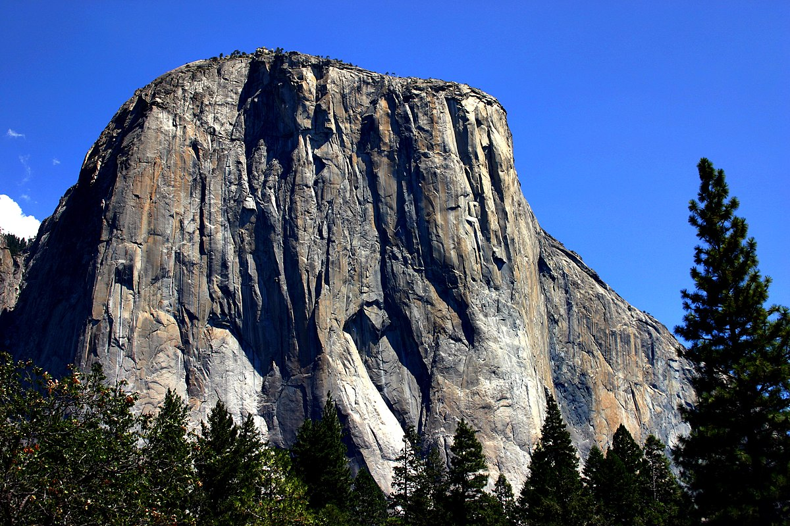
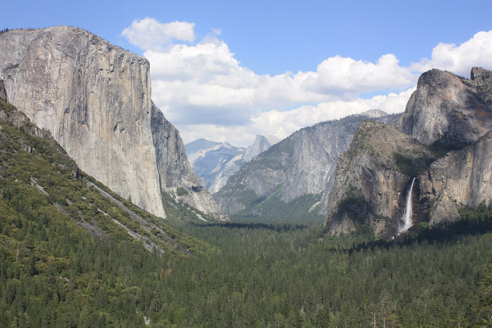
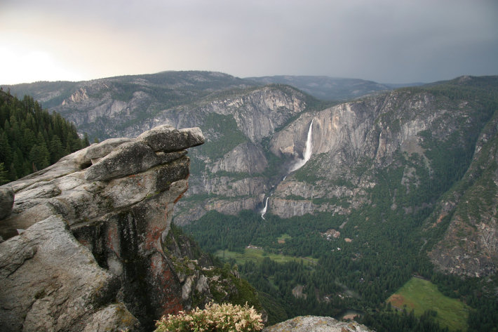

Small But Mighty Yosemite Views
 El Capitan is a 3,000-foot (910 m) vertical rock formation in Yosemite National Park.
 Tunnel View looks east into Yosemite Valley.
 Upper Yosemite Falls are
1,430 ft and are among the twenty highest waterfall in the world.
Upper Yosemite Falls are
1,430 ft and are among the twenty highest waterfall in the world.
 Hanging Rock, off Glacier Point, used to be a popular spot for people to, well, hang from. Crazy people.